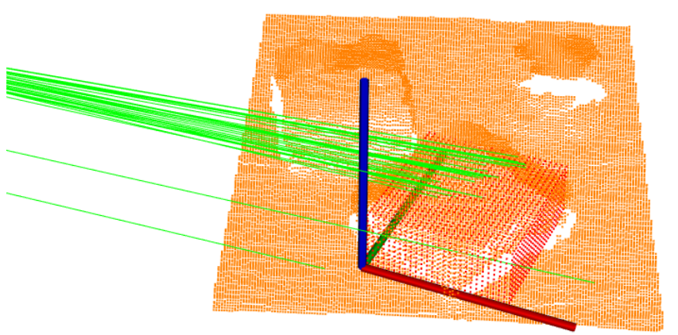
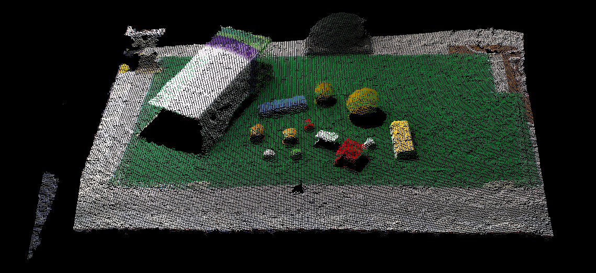

Presentation.
On March 16 we had our first LAR Meeting, in which every member of the LAR had to present their thesis subject and expected tasks for this semester.
Therefore part of this week was dedicated for the preparation of my presentation.
State of the art.
In order to write my project's state of the art and study what has already been done to solve the problems of bin-picking, I first started to read the other LAR members thesis in this subject. I focused mainly in Nuno Santos's and Rogrigo Salgueiro's theses because they both use the point cloud data obtained by the Kinect. However, they use different techniques for the object recognition. Nuno after clustering the point cloud in different objects he would compare each object with a model of a sphere, cylinder or plane.

On the other hand, Rodrigo compared the point cloud data with the point cloud of the CAD models to identify the desired object.

First data acquisition from the Kinect.
In order to use the Kinect I firstly needed to install OpenNI and Kinect driver by following these steps. Afterwards I was able to run Kinect on ROS and visualise it's data in Rviz.
Since I needed to process the data without being always connected to the Kinect I recorded it into a rosbag. In the next picture we can see a point cloud of the working area near the FANUC robot.
